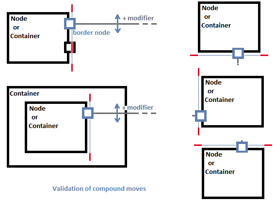

Summary: Edge with labels and connected ports compound move.
| Version | Status | Date | Authors | Changes |
|---|---|---|---|---|
| v0.1 | DRAFT | 2015-06-25 | mporhel | Initial version. |
| v0.2 | PROPOSAL | 2015-07-01 | mporhel | Team review. |
Relevant tickets:
In specific cases, we can find edges connected to border nodes. For example in Capella architecture and data flow diagrams, exchanges are connected to port in and port out. When the user wants to move an exchange on a layouted diagram, he has to move the source port, then the target port and possibly move some bendpoints of the edge.
The main goal of this evolution is to add the capability to move the group {edge, labels, ports} in a single «drag like» operation when the user uses a keyboard modifier and drag/move the edge.
This evolution only deals with the basic and direct cases:
Existing modifier for resize and move interactions:
| Resize shape + SHIFT | keep ratio |
| Resize shape + ALT (CTRL on Mac) | resize without snap |
| Resize shape + CTRL (ALT on Mac) | centered resize |
| Resize shape + F3 | resize with children location relative to parents |
| Resize shape + F4 | resize with snap to all shapes (if the «Snap to shapes» is already activated for the current diagram) |
| Move shape + SHIFT | restrict motion to 45 degrees |
| Move shape + ALT (CTRL on Mac) | Resize without snap |
| Move shape + CTRL (ALT on Mac) | clone in GEF, disabled in Sirius |
| Move shape + F4 | Move with snap to all shapes (if the «Snap to shapes» is already activated for the current diagram) |
| Move bendpoint + SHIFT | restrict motion to 45 degrees |
| Move bendpoint + ALT | Resize without snap (should be CTRL on Mac, Bug 471018) |
See http://melb.enix.org/sirius/keyboard-shortcuts/
See org.eclipse.gef.tools.ResizeTracker
See org.eclipse.gef.tools.DragEditPartsTracker
See org.eclipse.gmf.runtime.gef.ui.internal.tools.ConnectionBendpointTrackerEx
See Bug 471018 – Wrong no snapping modifier on Mac OS X
See Bug 463485 – Snap to all shapes
CTRL is declared as modifier for the GEF clone action on shapes and not referenced for interactions on bendpoints but it could be confusing to use it.
F3 is used as modifier for a Sirius specific resize interaction. We could also reuse it for the current Sirius specific group move.
The first step of the group move validation will be to check the structure of the group:
The second step is to check that source and target border nodes position on their parent are compatible with an unidirectional move:

The third step consists of:

The edge’s bendpoints are relative to the source and target anchors, themselves relatively located to the connected node bounds. So the compound move only has to move the source and target nodes with the same delta, the edge and its labels will automatically follow. However the feedback will have to properly computed and displayed whereas it is directly done in case of standard bendpoint move/creation.
The feedback should show the limits of the move or the validation result of the move. The mouse icon should be impacted.
It might be different than displaying the moved group in its final position.
It could be interesting to show guides as done on Sequence diagrams.
The feedback might not be as advanced as the drag of a single port, which shows the collapsed sibling ports.
The Sequence diagram defines its own user interactions on Sequence elements. Implementers will have to make sure that this feature is disabled/forbidden on Sequence messages as they are connected to executions or lifelines which are border nodes.
The current evolution only deals with edges connected to border nodes having only the moved edge in source/target connections.

The policy must return an unexecutable command and the feedback will have to show the forbidden icon for unsupported group structures.
No metamodel changes.
API Changes will be completed during implementation, it should concern only edit parts, policies and queries.
A new modifier will be available to replace the bendpoint creation operation by an edge move interaction.
No other user interface changes.
Validator and commands will be created in the edge selection policy. An other possibility was to create a constrained move request (ChangeBoundsRequest) and ask the source/target edit parts to build their commands but this would have result in the compound move command creation, validation and feedback to be dispatched in several places.
Another proposed idea is to provide a new selection shortcut (like the ALT+SHIFT+UP in a Java file) to extend the selection: on an edge it could select the source and target (and keep the edge primary selected). The user could also use the CTRL + click to build the selection. Then the edge bendpoints move/creation commands could analyze the selection and produce the compound move.